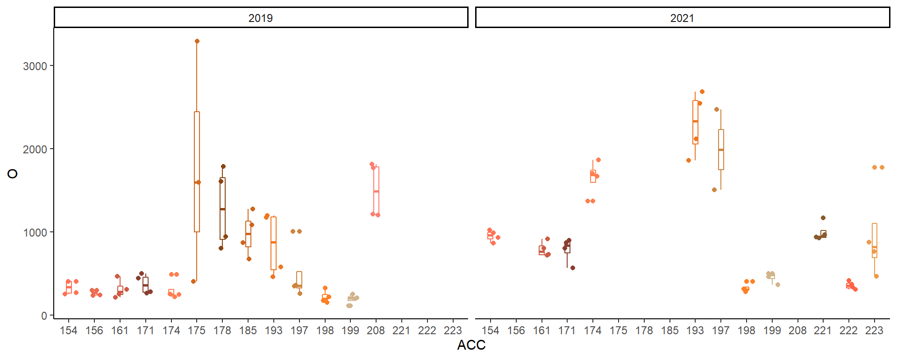
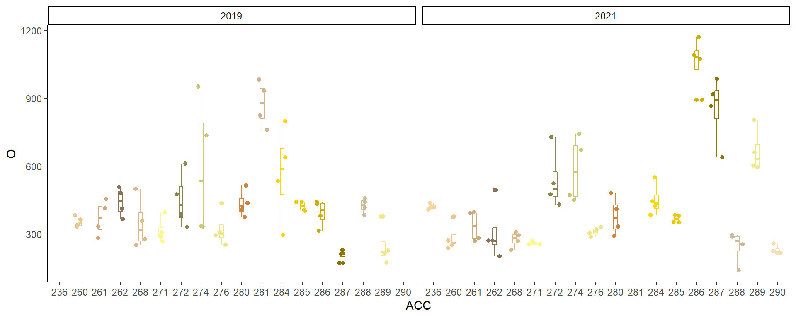
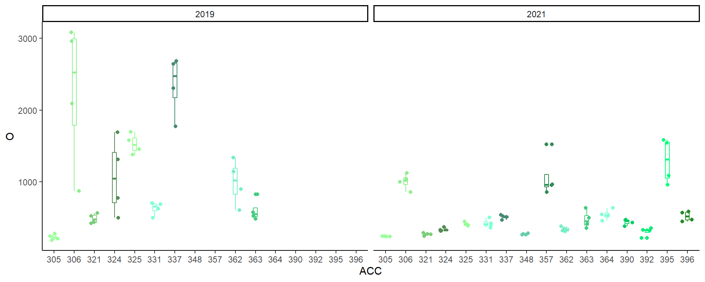
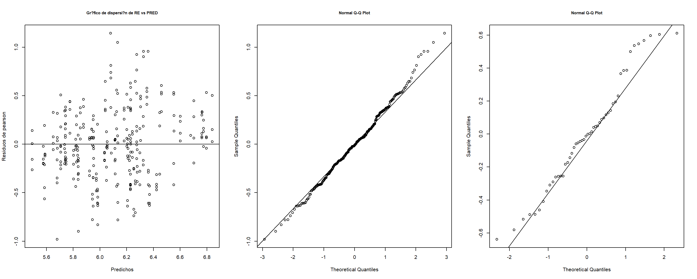

Chemical

Extracts
Fenoles
Metodología
Se muestrearon 10 frutos por genotipo de Hexachlamys edulis en 3 poblaciones de Entre Ríos: Concordia, PN El Palmar y Gualeguaychú. La cuantificación de compuestos fenólicos se realizó según la metodología de Makkar et al., (1993). Se pesaron 5 gramos de fruta fresca, se homogeneizó la muestra y se diluyó en solución extractante metanol 80%. Luego de 24hs la solución fue transferida a tubos conicos para su centrifugado durante 5 minutos a 2500rpm. El tubo queda separado por dos fases marcadas, una líquida y otra sólida en el fondo del tubo. Luego las muestras son transferidas a tubos de ensayo y el volumen llevado a 500 μl con agua desionizada. Se adicionan 250 μl de reactivo Folin-Ciocalteu (1N) y 1,25 ml de solución acuosa de carbonato de sodio decahidratado al 20%. Luego de 40 minutos en oscuridad la absorbancia es medida por espectrofotometría a 725 nm. El contenido de fenoles totales es expresado como mg ácido tánico/100g de peso fresco.
Estadística descriptiva
Boxplot y dispersión de concentración de fenoles de las tres poblaciones para 2019 y 2021

Individuos de Concordia en ambos años.

Individuos del Palmar en ambos años.
 ### Individuos de Gualeguaychú en ambos años. 
Tabla descriptiva
## ANIO N FEN sd se ci
## 1 2019 151 670.8721 613.7548 49.94666 98.68987
## 2 2021 174 611.5777 462.5762 35.06781 69.21584Estadística inferencial
Comparación interpoblacional e intrapoblacional para los años 2019 y 2021.
- Diseño anidado: Población(Genotipo).
- Análisis univariado de la variable concentración de fenoles.
- Distribución de probabilidades: Normal.
- Análisis de componentes de varianza.
- factores aleatorios: Población y Genotipo
- factores fijos: año
Resumen del modelo
## Linear mixed model fit by REML. t-tests use Satterthwaite's method ['lmerModLmerTest']
## Formula: log(FEN) ~ ANIO + (1 | REG/ACC)
## Data: data
##
## REML criterion at convergence: 386.8
##
## Scaled residuals:
## Min 1Q Median 3Q Max
## -2.49997 -0.57208 -0.02232 0.57032 2.91253
##
## Random effects:
## Groups Name Variance Std.Dev.
## ACC:REG (Intercept) 0.13862 0.3723
## REG (Intercept) 0.01395 0.1181
## Residual 0.15411 0.3926
## Number of obs: 299, groups: ACC:REG, 50; REG, 3
##
## Fixed effects:
## Estimate Std. Error df t value Pr(>|t|)
## (Intercept) 6.09909 0.09415 2.51630 64.778 4.03e-05 ***
## ANIO2021 0.09655 0.05107 271.34137 1.891 0.0597 .
## ---
## Signif. codes: 0 '***' 0.001 '**' 0.01 '*' 0.05 '.' 0.1 ' ' 1
##
## Correlation of Fixed Effects:
## (Intr)
## ANIO2021 -0.305Supuestos del modelo

Test de normalidad para muestras biológicas (frutos)
##
## Shapiro-Wilk normality test
##
## data: e
## W = 0.9949, p-value = 0.4251Test de normalidad para genotipos
##
## Shapiro-Wilk normality test
##
## data: alfai
## W = 0.96649, p-value = 0.166Conclusiones
## We fitted a linear mixed model (estimated using REML and nloptwrap optimizer) to predict FEN with ANIO (formula: log(FEN) ~ ANIO). The model included ACC and REG as random effects (formula: list(~1 | ACC:REG, ~1 | REG)). The model's total explanatory power is substantial (conditional R2 = 0.50) and the part related to the fixed effects alone (marginal R2) is of 7.50e-03. The model's intercept, corresponding to ANIO = 2019, is at 6.10 (95% CI [5.91, 6.28], t(294) = 64.78, p < .001). Within this model:
##
## - The effect of ANIO [2021] is statistically non-significant and positive (beta = 0.10, 95% CI [-3.95e-03, 0.20], t(294) = 1.89, p = 0.060; Std. beta = 0.06, 95% CI [-6.76e-03, 0.14])
##
## Standardized parameters were obtained by fitting the model on a standardized version of the dataset. 95% Confidence Intervals (CIs) and p-values were computed usingEl test de Wald (p=0.0594) arroja que no hay diferencias estadísticas significativas entre años.
ICC del modelo
## # Intraclass Correlation Coefficient
##
## Adjusted ICC: 0.497
## Conditional ICC: 0.494## [1] 0.5025108## [1] 0.4520021## [1] 0.04548715—-> 50,3% entre muestras de una misma accesión. —-> 45,2% entre accesiones de una misma región. —-> 4,5% entre regiones.
ICC del modelo = 49,7%
b
| log(FEN) | |||
|---|---|---|---|
| Predictors | Estimates | CI | p |
| (Intercept) | 6.10 | 5.91 – 6.28 | <0.001 |
| ANIO [2021] | 0.10 | -0.00 – 0.20 | 0.060 |
| Random Effects | |||
| σ2 | 0.15 | ||
| τ00 ACC:REG | 0.14 | ||
| τ00 REG | 0.01 | ||
| ICC | 0.50 | ||
| N ACC | 50 | ||
| N REG | 3 | ||
| Observations | 299 | ||
| Marginal R2 / Conditional R2 | 0.007 / 0.501 | ||
La mayor parte de la variación es explicada entre muestras de una misma accesión.
Próximas variables variables
- Actividad anti Oxidante
- Carotenoides
- Clorofilas
- pH
- Sólidos solubles (°Brix)
- Acidez total titulable (ATT)